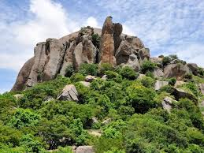

By Harshitha 8 B
Posted on: March 03/03/2026
Ramanagara, popularly known as "Reshme Nagara" (Silk City), is a vibrant district in Karnataka famous for its sprawling landscapes and deep historical roots. It is globally recognized for being one of the largest markets for silk cocoons in Asia, contributing significantly to the state's textile heritage.
While Ramanagara serves as the administrative headquarters, Kanakapura is a major cultural and commercial hub of the district. A highlight of the local calendar is the Kanakotsava, a grand annual festival celebrated with immense joy. This event showcases the region's art, folk music, and traditional performances, bringing the entire community together to celebrate their heritage.
The district is a treasure trove of ancient architecture, featuring magnificent temples and royal complexes built many centuries ago. These structures stand as a testament to the advanced engineering and artistic vision of past dynasties. The area is so rich in archaeological importance that parts of the region are celebrated alongside UNESCO World Heritage standards, featuring giant stone monuments and historic market streets that tell stories of a golden era.

Ramanagara is famous for its unique monolithic granite hills, some of the oldest in the world. These hills are not just beautiful to look at; they are a paradise for trekkers and rock climbers. The district is also blessed with the Arkavati and Shimsha rivers, which provide a peaceful atmosphere and scenic spots for families to visit during holidays.
Today, Ramanagara offers a wonderful mix of the old and the new. While you can explore ancient ruins and learn about the city's fascinating history, you can also find modern supermarkets and bustling urban centers. Whether you are conducting a scientific experiment in its diverse terrain or exploring the stone monuments, every day spent in Ramanagara is an amazing learning experience.